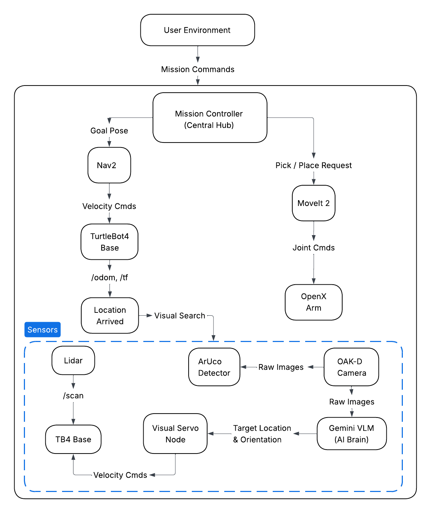

Autonomous Object Retrieval Project
Welcome to the official documentation for our autonomous warehouse retrieval system. This project bridges advanced mobile navigation, robotic manipulation, and Vision-Language Models (VLMs) to create a fully autonomous robotic worker.
Platform Overview
The TurtleBot 4 is the next-generation ROS 2 educational and research robot. Built on the iRobot Create 3 mobile base, it features:
- RPLidar A1M8: 2D laser scanner for SLAM and obstacle avoidance
- OAK-D Pro: Spatial AI stereo camera for RGB-D perception
- IMU & Wheel Encoders: For accurate odometry
Our project extends this platform with:
- OpenManipulator-X: 4-DOF robotic arm for object manipulation
- Google Gemini VLM: Vision-Language Model for intelligent object recognition
System Requirements
| Component | Version |
|---|---|
| Ubuntu | 22.04 LTS |
| ROS 2 | Humble Hawksbill |
| Python | 3.10+ |
| MoveIt 2 | Humble |
| Gazebo | Ignition Fortress |
Mission Pipeline
Our project elevates the standard TurtleBot 4 by integrating it with an OpenManipulator-X robotic arm and the Google Gemini Vision-Language Model (VLM).
We have engineered an autonomous pipeline for object retrieval within a simulated warehouse environment. The system operates in the following sequence:
- Dispatch: User issues a retrieval command specifying the target zone.
- Transit: Robot navigates to the designated warehouse zone using Nav2.
- Search & Perception: Upon arrival, the perception system Gemini VLM or ArUco scan to identify and locate the target object.
- Alignment & Grasping: Visual servoing aligns the robot, then OpenManipulator-X picks the object.
- Return & Drop-off: Robot navigates home and deposits the item.
Project Demonstration
Watch the fully integrated system execute a retrieval mission:
System Architecture

System Requirements
This pipeline relies on the following core hardware and software components:
- TurtleBot 4 Base (iRobot Create 3): Provides the mobile chassis, odometry, and low-level motor control.
- RPLidar: A 2D laser scanner used for generating occupancy grids, localization (AMCL), and real-time obstacle avoidance.
- OAK-D Pro Camera: Provides RGB and Depth streams for the perception pipeline and VLM integration.
- OpenManipulator-X Arm: A 4-DOF robotic arm used for precision picking and placing.
- ROS 2 & MoveIt 2: The underlying middleware and motion planning frameworks managing the entire ecosystem.
Quick Start Guide
1. Install Dependencies
Ensure your workspace is fully built and sourced before launching any nodes:
cd ~/workspace
rosdep install --from-paths src -y --ignore-src
colcon build
source install/setup.bash
2. Simulation Setup
Ensure your workspace is fully built and sourced before launching any nodes:
Terminal 1 - Gazebo Simulation:
ros2 launch tb4_openx_sim gazebo_sim.launch.py
*** Wait for all controllers to load
Terminal 2 - Navigation Stack:
ros2 launch tb4_openx_navigation navigate.launch.py
*** Open RViz, click "2D Pose Estimate" button, then click and drag on the map
to set the robot's initial position and orientation.
Terminal 3 - MoveIt 2:
ros2 launch tb4_openx_manipulation move_group.launch.py
Terminal 4 - Manipulation Pipeline:
ros2 launch tb4_openx_manipulation manipulation_pipeline.launch.py
Terminal 5 - Mission Controller:
ros2 run tb4_openx_navigation mission_controller.py
3. Real Robot Setup
Ensure your workspace is fully built and sourced before launching any nodes:
Terminal 1 - TurtleBot 4 Bringup (on robot):
ros2 launch turtlebot4_bringup standard.launch.py
*** Ensure the you saved your Map correct and all the ros2 topic from
TB4 is publishing on our PC
Terminal 2 - Navigation Stack:
ros2 launch tb4_openx_navigation real_navigate.launch.py
*** Make sure Map is loaded and everthing is loaded
Terminal 3 - MoveIt 2:
ros2 launch tb4_openx_manipulation move_group.launch.py use_sim:=false
Terminal 4 - Manipulation Pipeline:
ros2 launch tb4_openx_manipulation real_manipulation_pipeline.launch.py
Terminal 5 - Mission Controller:
ros2 run tb4_openx_navigation real_mission_controller.py
Authors
- Dev Dipak Ghiya
- Fazil Khan
- Qingyuan Cao